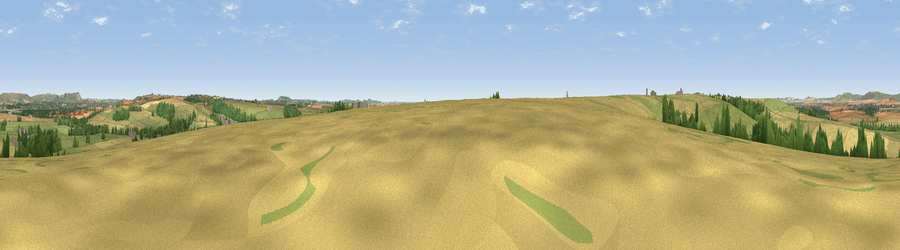

Viewpoint near Upavon
#26825 in England · top 48% of its area beats it · near UpavonThe view, rendered

A 360° render of this exact spot computed from the terrain model, tree cover and land cover — summer colours, afternoon light, calibrated against photographs of famous viewpoints. Real trees, hedges and buildings will differ in detail.
The panorama
Grey silhouette: terrain skyline in each direction (720 bearings, Earth curvature and refraction included). Dashed green: skyline with trees (+15 m) and buildings (+8 m) as obstacles. Blue strip: how far the ground is visible on each bearing.
Where the view opens
Wedge length = distance to the farthest visible ground on that bearing (vegetation-aware). Rings at 10, 25 and 50 km.
What fills the view
47% grassland · 42% cropland · 10% woodland · 1% built-up
Angular shares of the visible panorama (visual magnitude), not map area. Landscape diversity 0.44 (0–1 Shannon).
Key numbers
More beautiful places nearby
The staircase of upgrades: each row has a higher view potential than everything closer. Driving times are estimates from straight-line distance, calibrated against real road routing — check an actual route before setting out.
| Place | Direction | Drive | Score |
|---|---|---|---|
| Viewpoint near Charlton St Peter | NW · 2 km | ~5 min | 50.8 |
| Viewpoint near Pewsey | NE · 6 km | ~12 min | 57.0 |
| Viewpoint near Milton Lilbourne | ENE · 8 km | ~16 min | 62.7 |
| Viewpoint near Urchfont | W · 8 km | ~17 min | 66.5 |
| Viewpoint near Alton Priors | N · 9 km | ~18 min | 70.3 |
| Viewpoint near Alton Priors | NNW · 9 km | ~19 min | 72.5 |
| Viewpoint near Oare | NNE · 10 km | ~20 min | 72.9 |
| Viewpoint near Allington | NNW · 11 km | ~21 min | 75.6 |
51.29018, -1.82607 · source: screening · position refined by local search. Computed location — check access rights before visiting.